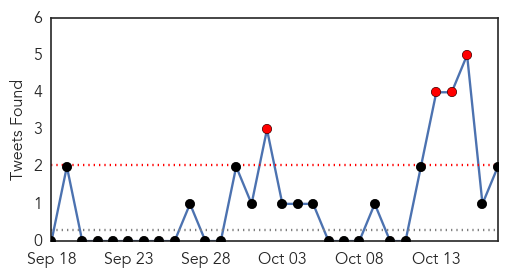
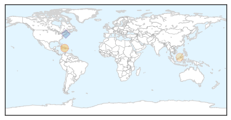

Toggle navigation
Early Warning
Daily Alerts
Cholera
Oct 17, 2015
30 Day Trends
Web: 0
alerts
, 1
warnings
Twitter: 0
alerts
, 0
warnings
Top Articles:
0.986
Haiti’s Earthquake Was Devastating. The Cholera Epidemic Was Worse.
0.856
Lenai: Public health department committed to eliminating cholera threat
0.646
Borneo Bulletin Online
Top Tweets:
0.783
Haiti’s Earthquake Was Devastating. The Cholera Epidemic Was Worse. @franquigley via humanrights http://t.co/cObKmFp9YE
0.731
RT: Haiti’s Earthquake Was Devastating. The Cholera Epidemic Was Worse. via http://t.co/g4OieqITon
0.617
RT: "The cholera was worse because it’s a humanrights tragedy" Haiti UNCholeraEpidemic https://t.co/Xm3s8aPYK8
0.615
RT: Top story:"HAITI" Haiti’s Earthquake Was Devastating. The Cholera Epidemic Was … http://t.co/3MpkgaiMyH, see more http://t.co/…
0.595
RT: @cholera5yrs stand w/1,000s of Haiti cholera victims needing UN accountability on this 5yr anniversary! h…
0.577
.@UN cholera and its' victims' fight for justice is lead story today in Haiti's leading newspaper. humanrights http://t.co/qv6FjacCK3
0.559
RT: Les victimes du cholera en campagne contre l’ONU ? https://t.co/1Gf07uLW3U via
0.547
RT: Follow folks like and for more about cholera in Haiti facejustice 5years
Web/News Articles
Tweets

Article Locations

Article Confidences